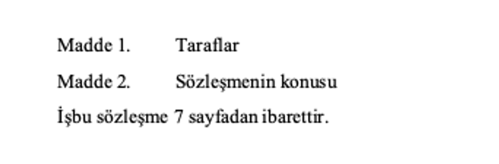

1.2.3 ile çevrilmiş hâli

1.2.4 ile çevrilmiş hâli

Word’den UDF’ye çevirirken bazı belgelerde sayfa sayısı, madde numarası, tablo satırı ya da metin kutusu düşüyordu. Bu kayıpları giderdim, Windows ve Mac’te denedim.
1.2.3 ile çevrilmiş hâli
1.2.4 ile çevrilmiş hâli

Aynı Word belgesi, UYAP Doküman Editörü’nde açılmış hâliyle.